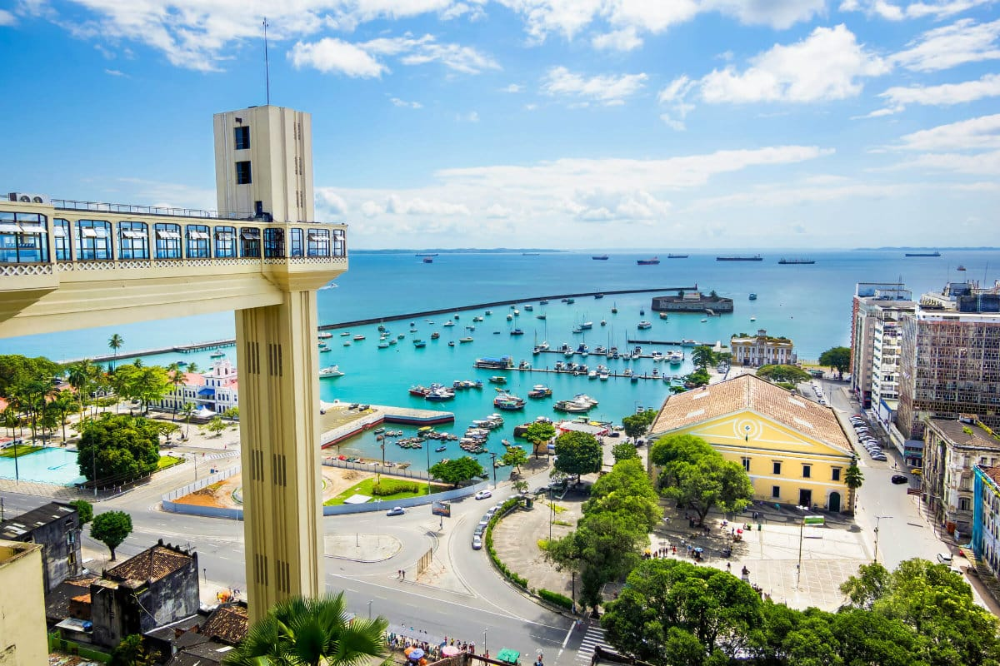
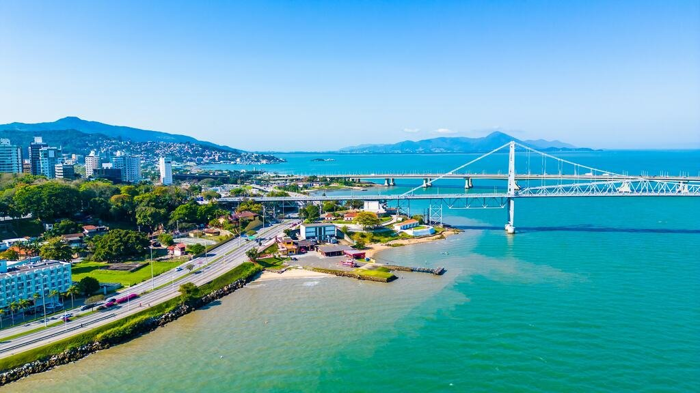
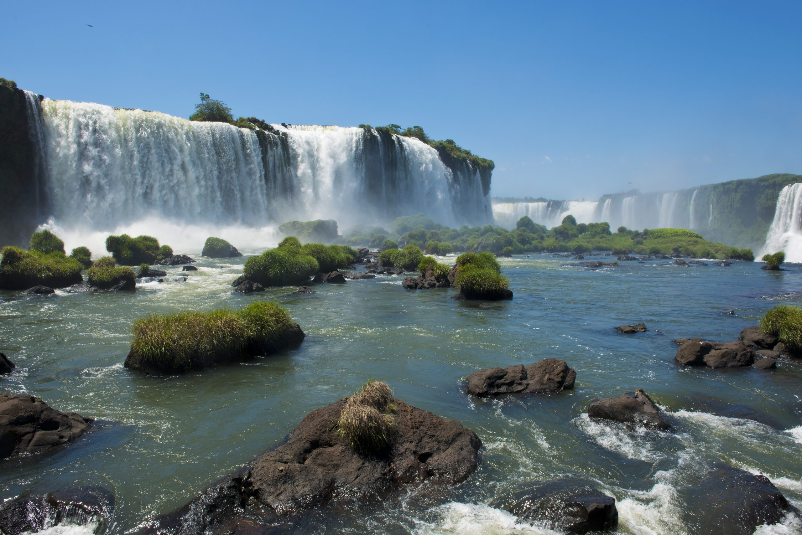
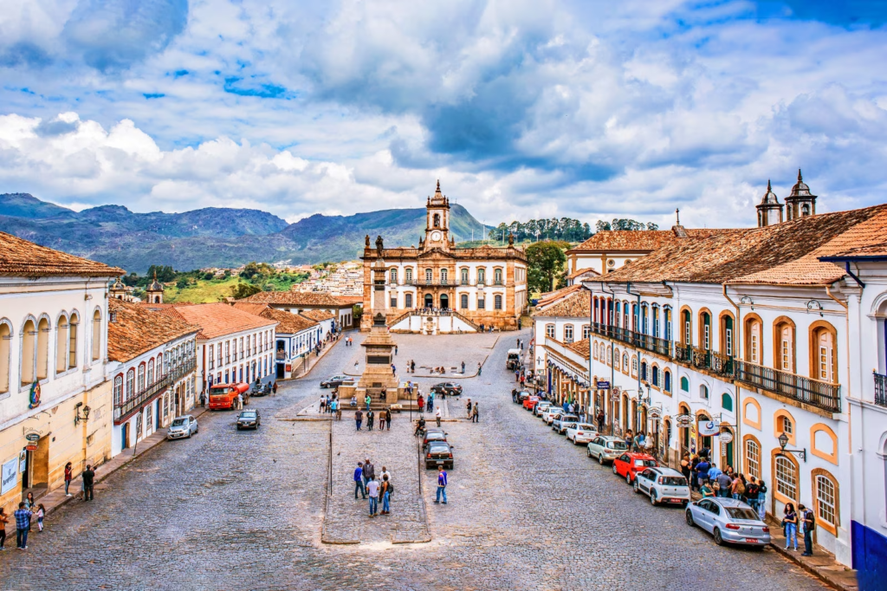

Rio de Janeiro
Conheça o Cristo Redentor e as praias maravilhosas.

Conheça o Cristo Redentor e as praias maravilhosas.
Desfrute do Carnaval e da rica cultura baiana.
Ilha da Magia, Florianópolis encanta com suas praias deslumbrantes e vibrante vida noturna.
Uma das maiores e mais impressionantes quedas d'água do mundo, localizada no Parque Nacional do Iguaçu.
Porta de entrada para a Floresta Amazônica, Manaus oferece a fascinante experiência do Encontro das Águas e o icônico Teatro Amazonas.

Um tesouro histórico de arquitetura barroca e igrejas ornamentadas, Ouro Preto é um Patrimônio Mundial da UNESCO.
